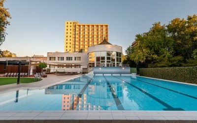

Rólunk
Üdvözöljük szállodánkban, ahol a vendégélmény és a kényelem találkozik!
Szállodánk több mint egyszerű szálláshely – egy hely, ahol kikapcsolódhat, feltöltődhet, és otthon érezheti magát. Célunk, hogy minden vendégünk számára maradandó élményt nyújtsunk, legyen szó pihenésről, üzleti útról vagy kalandos felfedezésekről.
Modern, mégis meghitt környezetünkben barátságos személyzet, gondosan kialakított szobák és minőségi szolgáltatások várják Önt. Hisszük, hogy a részletek teszik különlegessé az itt tartózkodást – ezért minden nap azon dolgozunk, hogy vendégeink elégedetten, mosollyal az arcukon távozzanak tőlünk.
Szobáinkat úgy terveztük, hogy minden pillanatukban a nyugalmat, kényelmet és stílust sugározzák. Legyen szó rövid tartózkodásról vagy hosszabb pihenésről, nálunk garantáltan otthon érzi majd magát.
Minden szobánk gondosan kialakított, modern berendezéssel, meleg színekkel és természetes anyagokkal várja vendégeinket. A kényelmes ágyak, a minőségi ágyneműk és a hangulatos világítás biztosítják a tökéletes alvást és pihenést.
Amit biztosítunk minden szobában:
- Kényelmes, nagyméretű ágyak
- Saját fürdőszoba prémium törölközőkkel és piperecikkekkel
- Légkondicionáló és fűtés egyéni szabályozással
- Síkképernyős TV és ingyenes Wi-Fi
- Minibár és vízforraló kávé- és teaválasztékkal
- Íróasztal, széf és ruhásszekrény
Többféle szobatípust kínálunk, a praktikus standard szobáktól a tágasabb, erkélyes vagy luxus felszereltségű lakosztályokig – így minden vendég megtalálhatja az igényeinek leginkább megfelelőt.
Nálunk a kényelem nem luxus – hanem alapélmény.
Legyen szó egy romantikus hétvégéről, családi nyaralásról vagy üzleti útról – nálunk mindig szívesen látjuk!
Wellness – A test és lélek harmóniája
Engedje meg magának a teljes kikapcsolódást wellness részlegünkben, ahol a nyugalom és a feltöltődés kerül a középpontba. Fedezze fel szolgáltatásainkat, melyekkel garantáltan elfelejtheti a mindennapok feszültségét!
Wellness részlegünk ideális helyszín a pihenésre vágyóknak – akár egy hosszú nap után, akár egy aktív programmal teli hétvége részeként. Vendégeink számára különféle lehetőségeket kínálunk a felfrissülésre:
- Szaunavilág: finn szauna, infra szauna és gőzkabin a méregtelenítés és relaxáció jegyében
- Jacuzzi: pezsgőfürdőnk tökéletes hely egy kellemes, nyugtató fürdőzéshez
- Masszázsok: képzett masszőreink személyre szabott kezelésekkel segítik az ellazulást
- Beltéri medence: kellemes hőmérsékletű víz, csendes környezet
- Pihenőtér: hangulatos nyugágyak, halk zene és nyugalom
A wellness részleg használata szállóvendégeink számára elérhető, igény szerint pedig külön wellness-csomagokkal is várjuk azokat, akik egy kis extra kényeztetésre vágynak.
Töltődjön fel testben és lélekben – nálunk minden adott egy tökéletes kikapcsolódáshoz!
Természet, friss levegő és teljes kikapcsolódás
Szállodánk nemcsak belül nyújt tökéletes kényelmet, hanem kívül is egy olyan környezetet kínál, ahol a természet közelsége, a csend és a nyugalom új értelmet nyer.
Kültéri részlegünk ideális hely a pihenésre és a feltöltődésre – legyen szó egy reggeli kávéról a teraszon, délutáni napozásról vagy egy esti beszélgetésről a csillagos ég alatt.
Amit kínálunk:
- Gondozott kert hangulatos pihenőpadokkal, virágzó növényekkel és árnyas fákkal
- Napozóterasz kényelmes napágyakkal, ahol átadhatja magát a napsugaraknak
- Kültéri medence, ami tökéletes frissítő a melegebb napokon
- Terasz és kiülők – ideális hely egy pohár borhoz vagy reggelihez a szabadban
- Játszótér / családbarát tér – a kisebbeknek biztonságos szórakozás
- Grill- és tűzrakóhely – baráti estékhez, közös sütögetéshez
- Kerékpár- és sétaútvonalak közvetlenül a szállás közelében
Ha igazán ki szeretne szakadni a hétköznapok rohanásából, nálunk ezt nemcsak a falakon belül, hanem a szabad ég alatt is megteheti. Töltsön időt a természetben – kényelmesen, zavartalanul.